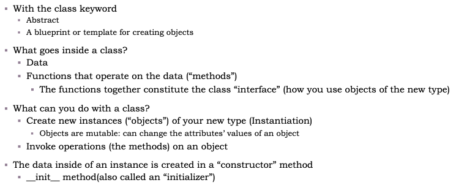

CS 1410
Xi Chen
__str__ so an object has a readable string representation
Edit the code, then click Run.
Output
Click Run to execute this Python code in the browser.
__init____str__fullnameemail
Edit the code, then click Run.
Output
Click Run to execute this Python code in the browser.
A list that stores Person objects.
add(self, person_obj)__str__(self)
Students can modify the list contents and rerun the example.
Output
Click Run to execute this Python code in the browser.
from person import Person means: from person.py, import the Person class.
from person_list import PersonList means: from person_list.py, import the PersonList class.
Note
For convenience, the runnable examples in this web lesson keep related code in one editor. In a real project, the classes can be separated into different .py files.
Try changing which object is mutated, or add id(…) to compare identities.
Output
Click Run to execute this Python code in the browser.
| Method | What It Does |
|---|---|
Student(name, number) |
Creates a Student object with the given name and number of scores. Each score is initially 0. |
get_name() |
Returns the student’s name |
get_score(i) |
Returns the student’s ith score |
set_score(i, score) |
Resets the student’s ith score |
get_average() |
Returns the student’s average score |
get_high_score() |
Returns the student’s highest score |
__str__() |
Returns a string representation of the student’s information |
This slide shows the intended use case of the Student class.
Output
Click Run to execute this Python code in the browser.
self.__init__ MethodWhen we write s = Student("Juan", 5), Python creates a new object and passes it as self into __init__.
Output
Click Run to execute this Python code in the browser.
Output
Click Run to execute this Python code in the browser.
Output
Click Run to execute this Python code in the browser.
get_score()Output
Click Run to execute this Python code in the browser.
__str__ Magic Method__str__ method.str(obj) or print(obj) is used, __str__ is called automatically.__str__Output
Click Run to execute this Python code in the browser.
Reads a value but does not change it.
Changes a value.
Output
Click Run to execute this Python code in the browser.
An object becomes a candidate for garbage collection when it can no longer be referenced.
cls, not self.Output
Click Run to execute this Python code in the browser.
@classmethod decorator.cls as the special parameter.Output
Click Run to execute this Python code in the browser.
Output
Click Run to execute this Python code in the browser.
__new__ vs. __init____new__: Constructor__init__.object.__init__: Initializerself.Order: __new__ creates the object → __init__ initializes the object.
Output
Click Run to execute this Python code in the browser.
A thing. A kind of thing. A type of thing. Attributes of a thing.
In a problem description, look for nouns.
An action. An operation. An algorithm. Behavior of a thing.
In a problem description, look for verbs.
__init__ and __str__.